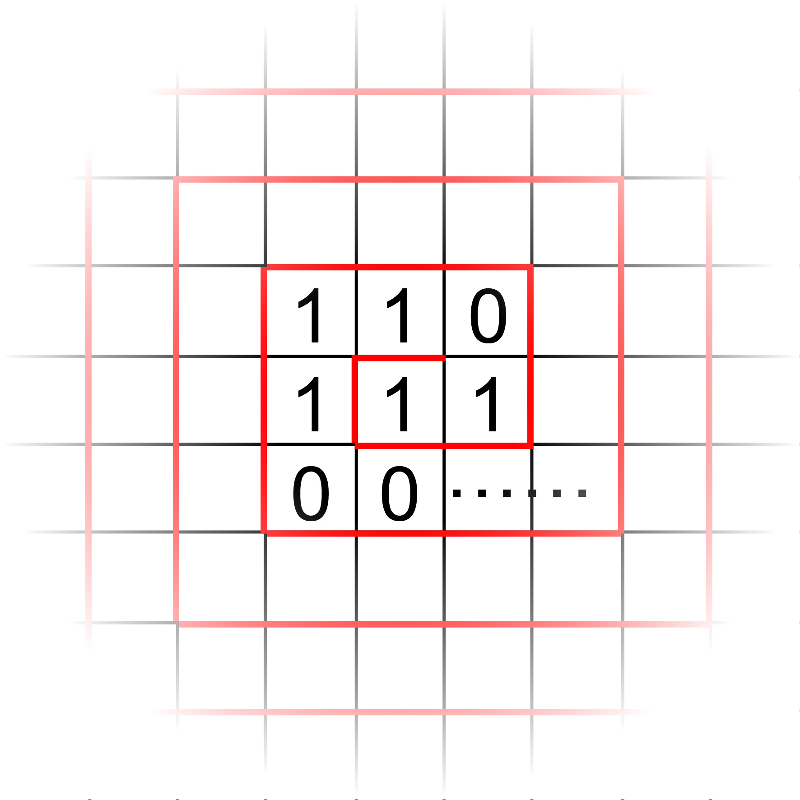

Riddle 16 Web of Data
将 √3/2 化为二进制表示, 并以蛇形 (逆时针旋转) 依次填入格子中.
例如: 1.71875 → 1.1011100 , 之后填入格子中 (如下图) .
将格子的起始位置记作 (0, 0) , 以水平为 x 轴, 竖直为 y 轴, 确立每个格子与坐标的一一对应关系.
从格子 (x, y) 算起, 向右数 (n - 1) 个格子, 可以得到一个由 n 位二进制码编成的序列, 将其记作 (y, x, n) .
例如: "110" 在上图中的编码为: (1, -1, 3)
则各字母在上述网格中的编码为:
| 字母 | 码值 |
|---|---|
| A | (-21, -21, 4) |
| B | (-13, -5, 6) |
| C | (-21, 49, 5) |
| D | (22, 11, 5) |
| E | (4, -6, 3) |
| F | (42, 19, 5) |
| G | (3, 31, 6) |
| H | (-5, 15, 4) |
| I | (24, 11, 4) |
| J | (-59, 34, 8) |
| K | (72, -47, 7) |
| L | (-18, -22, 5) |
| M | (-47, -37, 5) |
| N | (5, 22, 4) |
| O | (-29, -16, 4) |
| P | (18, 48, 6) |
| Q | (-11, -98, 8) |
| R | (-1, 11, 4) |
| S | (-4, 19, 4) |
| T | (-17, 12, 3) |
| U | (-29, -42, 5) |
| V | (-29, 1, 7) |
| W | (-2, -42, 5) |
| X | (7, 2, 8) |
| Y | (42, -33, 6) |
| Z | (43, -4, 8) |
24038 -1807455 778 256065152 -7912 86 -237865.
纵使蜘蛛编出的网再大,
老鹰也能从容自在地将它冲破.
Tips
-
因为其它 Riddles 的 Tips 会使用到 Nise Code 来加密, 而且还有的 Riddle 本身就包含 Nise Code 的运算, 如果不得到一张 Nise Code 的密码表, 你几乎就注定无法继续解迷了. 也即是 "Decode or Defeat" (破译 或是 破灭) .
-
Ccehk(101) eht(51) beeistw(315) for(90) ehlp(118)
输入并检查答案
Answer
下一个迷题藏在假山的监控旁, 杆子所在的地下
理论上, 如果你在上一题推出了完整的 Nise Code 编码表, 你无需求解, 只要翻译最后一句话即可.
本题设计的目的是将你手上不完整的 Nise Code 编码表补全, 保证后续题目你不会因为中缺少编码而卡住.
之前几题虽然我都给出了代码实现, 但破译时是可以使用手算的. 但这一题对你的计算机水平和数学水平提出了要求, 你需要能求出一个简单的根式, 计算它的二进制表示 (或者使用 Mathematica 等数学工具). 然后根据要求排成矩阵, 读取特定位置的信息. 由于给出的坐标故意设置的很大, 因此无法手算.